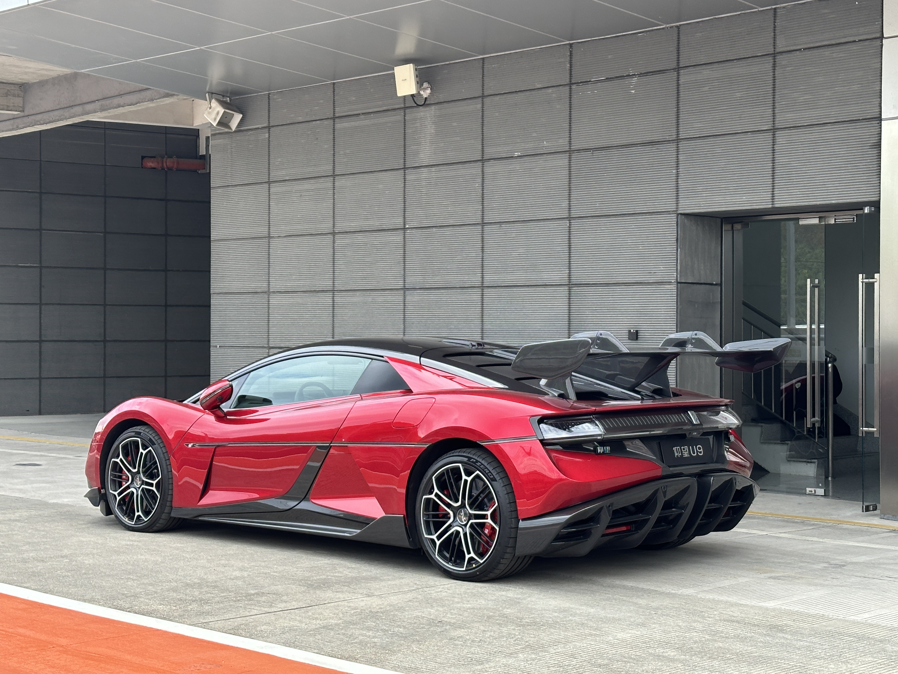
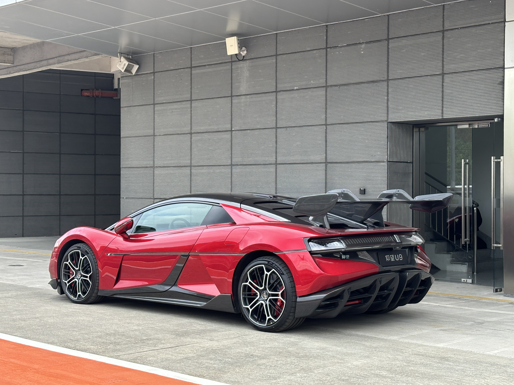
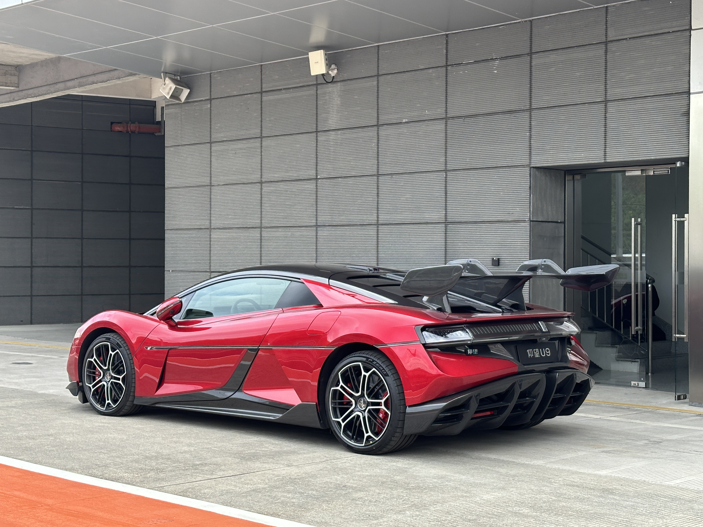
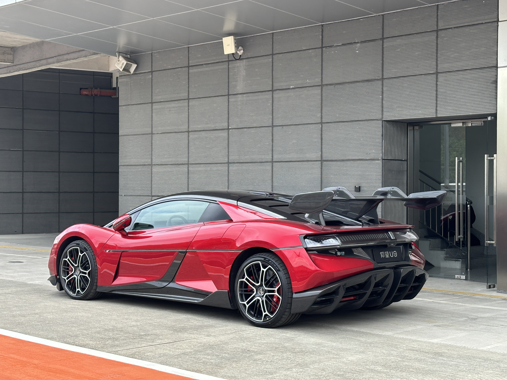

The Yangwang U9 (Chinese: 仰望U9) is a battery electric super-coupe manufactured by BYD Auto under its luxury car brand Yangwang. The U9 is the second vehicle from the Yangwang brand after the U8 off-road SUV, and was formally introduced on Auto Shanghai in April 2023.
The U9 is equipped with four electric motors providing a total power output of 960 kW (1,290 hp) and a maximum range of 450 km (280 mi) on the China Light-Duty Vehicle Test Cycle (CLTC). BYD reported a 0-100 km/h (62 mph) acceleration time of 2.36 seconds and a 1⁄4 mi (402 m) drag race time of 9.78 seconds.
The U9 is built with an 800V electrical architecture, with a maximum DC charging power of 500 kW. The charging duration between 30% and 80% is 10 minutes. The U9 also supports dual charging or plugging in two chargers simultaneously to increase charging speed.